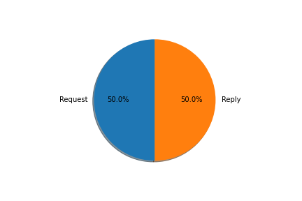

Nombre total des trames changées
[11016]
Drapeaux (Flags)
Nombre de flags [P] (PUSH) = [1673]
Nombre de flags [S] (SYN) = [2046]
Nombre de flag [.] (ACK) = [6961]

Nombre des requests et replys
Request = [42]
Reply = [42]
Statistiques entre seq, win et ack
Nombre de seq = [8201]
Nombre de win = [10766]
Nombre de ack = [8768]